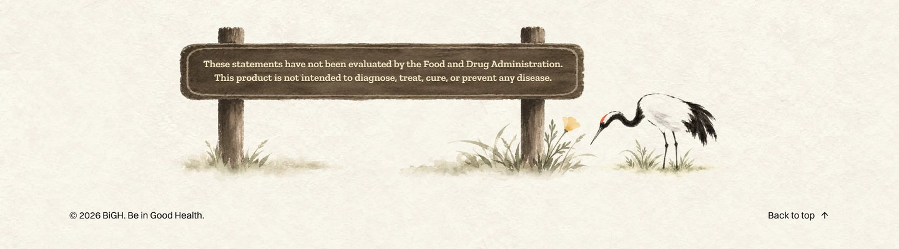
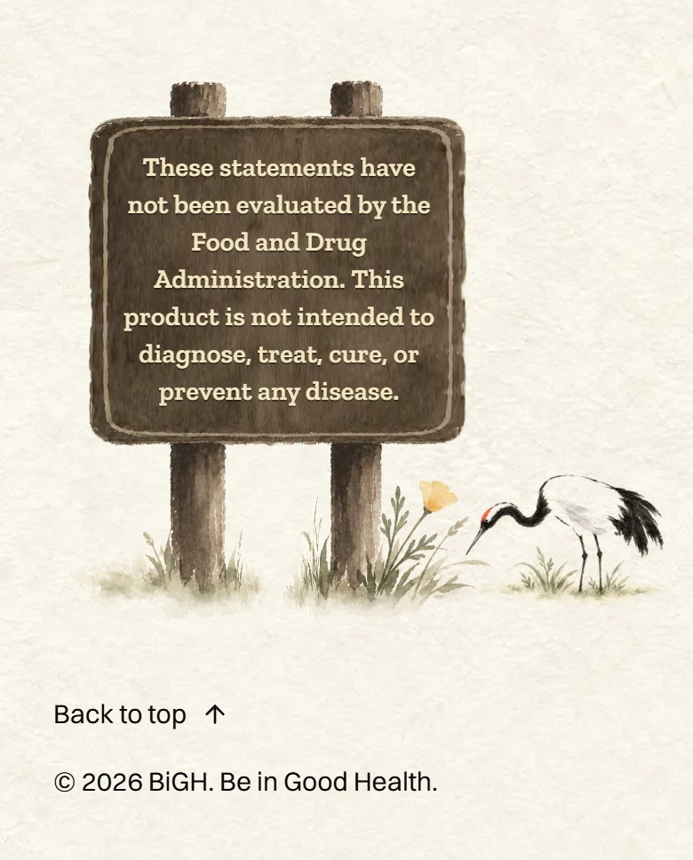
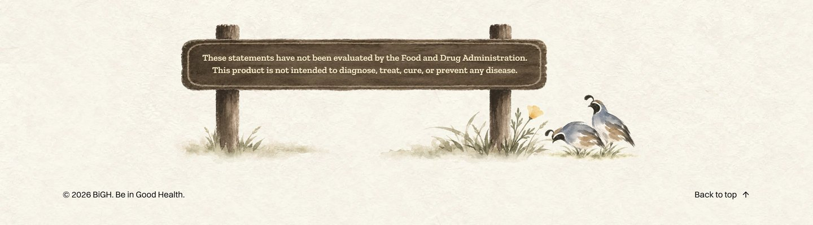
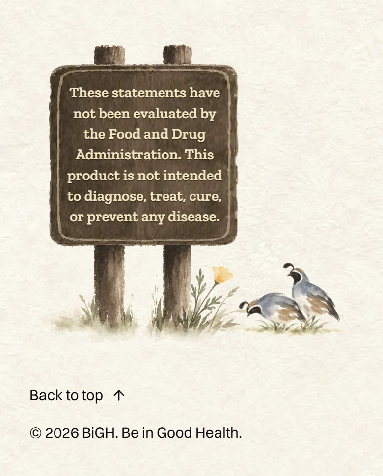
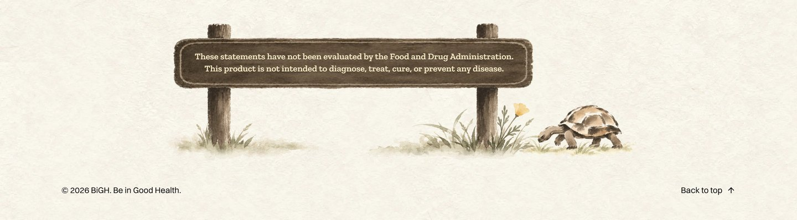
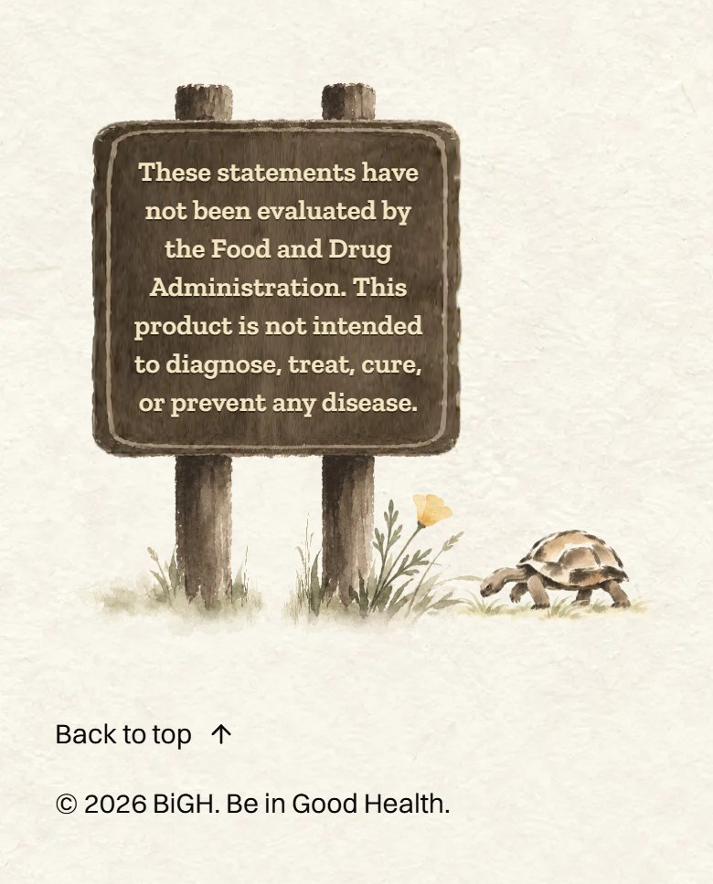
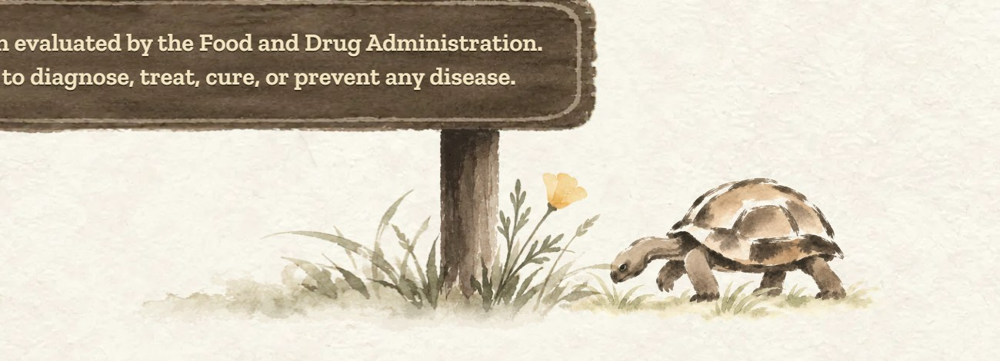
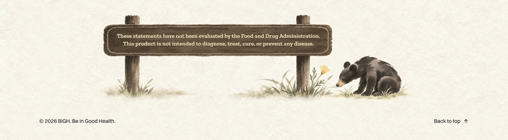
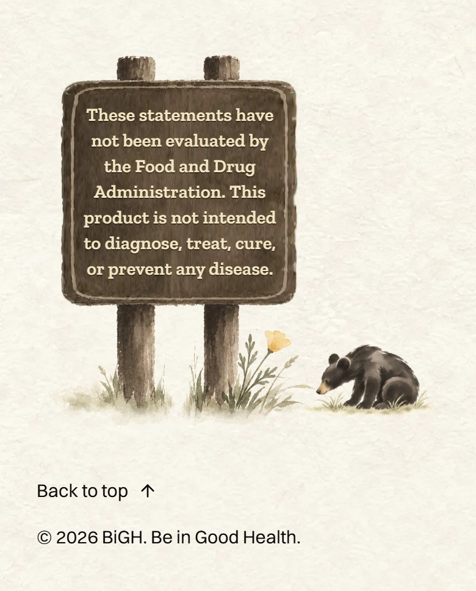

<title>Footer Animal by the Sign</title>
<meta name="claude:viewport-fit-sides" content="cover">
<link rel="preconnect" href="https://fonts.googleapis.com">
<link rel="preconnect" href="https://fonts.gstatic.com" crossorigin>
<link rel="stylesheet" href="https://fonts.googleapis.com/css2?family=Ysabeau:wght@500;650&display=swap">
<style>
  /* Layout: one column; today's crane first, then each animal: its words, then the laptop and
     phone footers of the real homepage and a close-up. */
  :root {
    --paper: #f6f1e7;
    --ink: #1d1b18;
    --ink-soft: #5d574e;
    --rule: #ddd4c4;
    --gold: #a77c25;
    --pick: #2f4a3a;
    --title: "Ysabeau", "Palatino Linotype", Palatino, Georgia, serif;
    --body: system-ui, -apple-system, "Segoe UI", Roboto, sans-serif;
  }
  @media (prefers-color-scheme: dark) {
    :root:not([data-theme="light"]) {
      --paper: #1b1a17; --ink: #f1ece2; --ink-soft: #b9b0a2;
      --rule: #3a3630; --gold: #d6aa52; --pick: #9cc3a8; color-scheme: dark;
    }
  }
  :root[data-theme="dark"] {
    --paper: #1b1a17; --ink: #f1ece2; --ink-soft: #b9b0a2;
    --rule: #3a3630; --gold: #d6aa52; --pick: #9cc3a8; color-scheme: dark;
  }
  body {
    background: var(--paper);
    color: var(--ink);
    font: 17px/1.55 var(--body);
    padding-left: max(16px, env(safe-area-inset-left, 0px));
    padding-right: max(16px, env(safe-area-inset-right, 0px));
  }
  main { max-width: 1100px; margin: 0 auto; padding-block: 40px 72px; display: grid; gap: 52px; }
  h1, h2 { font-family: var(--title); font-weight: 650; text-wrap: balance; margin: 0; letter-spacing: -0.01em; }
  h1 { font-size: clamp(34px, 6vw, 52px); line-height: 1.05; }
  h2 { font-size: clamp(26px, 4vw, 34px); line-height: 1.1; }
  p { margin: 0; max-width: 62ch; }
  ul { margin: 0; padding-left: 1.2em; max-width: 62ch; color: var(--ink-soft); display: grid; gap: 4px; }
  .intro { display: grid; gap: 12px; }
  .intro p { color: var(--ink-soft); font-size: 18px; }
  .choice { display: grid; gap: 14px; padding-top: 26px; border-top: 1px solid var(--rule); }
  .head { display: flex; flex-wrap: wrap; align-items: baseline; gap: 10px 16px; }
  .letter { font-family: var(--title); font-size: clamp(44px, 7vw, 60px); line-height: 0.8; color: var(--gold); font-weight: 650; }
  .score { font: 600 15px/1 var(--body); font-variant-numeric: tabular-nums; padding: 7px 11px; border: 1px solid var(--rule); border-radius: 999px; color: var(--ink-soft); }
  .tag { font: 600 13px/1 var(--body); letter-spacing: 0.06em; text-transform: uppercase; color: var(--paper); background: var(--pick); padding: 7px 10px; border-radius: 999px; }
  .what { font-size: 18px; }
  .note { color: var(--ink-soft); }
  .shots { display: grid; grid-template-columns: 3fr 1fr; gap: 12px; align-items: start; }
  figure { margin: 0; display: grid; gap: 6px; min-width: 0; }
  figure img { display: block; width: 100%; height: auto; border: 1px solid var(--rule); border-radius: 6px; }
  figcaption { font-size: 13px; color: var(--ink-soft); letter-spacing: 0.02em; }
  @media (max-width: 640px) {
    .shots { grid-template-columns: 1fr; }
    .shots figure:last-child { width: 62%; }
  }
</style>
<main>
  <header class="intro">
    <h1>Who stands by the park sign?</h1>
    <p>Part 5: the red-crowned crane at the bottom of every page reads as Chinese, like the old opening's crane did. Here are three California animals in its place, laid on the real footer. The sign, its poppy and the words stay.</p>
    <ul>
      <li>Each one looks at the sign's poppy, like the crane does today.</li>
      <li>The same painting on every page, in the sign's own quiet colours.</li>
      <li>On a phone the sign keeps its seven lines.</li>
    </ul>
  </header>
  <section class="choice" aria-labelledby="now-name">
    <div class="head"><h2 id="now-name">Today: the red-crowned crane</h2></div>
    <div class="shots">
      <figure><figcaption>Laptop</figcaption></figure>
      <figure><figcaption>Phone</figcaption></figure>
    </div>
  </section>
  <section class="choice" aria-labelledby="a-name">
    <div class="head">
      <span class="letter">A</span>
      <h2 id="a-name">California quail</h2>
      <span class="score">9 / 10</span>
      <span class="tag">My pick</span>
    </div>
    <p class="what">California's state bird. One stands tall on watch while the other bends to the poppy: a quail covey always keeps a lookout. Stay sharp.</p>
    <p class="note">The smallest of the three. On a phone the birds are small, but their curled plumes still read.</p>
    <div class="shots">
      <figure><figcaption>Laptop</figcaption></figure>
      <figure><figcaption>Phone</figcaption></figure>
    </div>
    <figure><figcaption>Close-up, full size</figcaption></figure>
  </section>
  <section class="choice" aria-labelledby="b-name">
    <div class="head">
      <span class="letter">B</span>
      <h2 id="b-name">Desert tortoise</h2>
      <span class="score">8 / 10</span>
      
    </div>
    <p class="what">California's state reptile. It lives among the Mojave's spring poppies and can live more than 50 years. It walks up and sniffs the poppy.</p>
    <p class="note">Slow can read as tired on a site about energy. Its shell is the most drawn of the three.</p>
    <div class="shots">
      <figure><figcaption>Laptop</figcaption></figure>
      <figure><figcaption>Phone</figcaption></figure>
    </div>
    <figure><figcaption>Close-up, full size</figcaption></figure>
  </section>
  <section class="choice" aria-labelledby="c-name">
    <div class="head">
      <span class="letter">C</span>
      <h2 id="c-name">Black bear cub</h2>
      <span class="score">8.5 / 10</span>
      
    </div>
    <p class="what">A young black bear, the kind that lives in California's state parks. A bear stands on the state flag. It sniffs the poppy.</p>
    <p class="note">The biggest and darkest of the three: it pulls your eye away from the sign. A bear by a park sign can also read as a warning.</p>
    <div class="shots">
      <figure><figcaption>Laptop</figcaption></figure>
      <figure><figcaption>Phone</figcaption></figure>
    </div>
    <figure><figcaption>Close-up, full size</figcaption></figure>
  </section>
</main>
